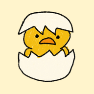

짹짹이
Claude 버전 짹짹이를 여는 중이에요…
짹짹이 열기병아리 아이콘으로 바로가기 만들기
- 아이폰(사파리): 아래 공유 버튼(□↑) → 홈 화면에 추가
- 안드로이드(크롬): 오른쪽 위 ⋮ → 홈 화면에 추가
- PC(크롬·엣지): 오른쪽 위 ⋮ → 저장 및 공유(또는 앱) → 바로가기 만들기
만든 바로가기를 누르면 이 화면을 거쳐 바로 짹짹이가 열려요.

Claude 버전 짹짹이를 여는 중이에요…
짹짹이 열기만든 바로가기를 누르면 이 화면을 거쳐 바로 짹짹이가 열려요.